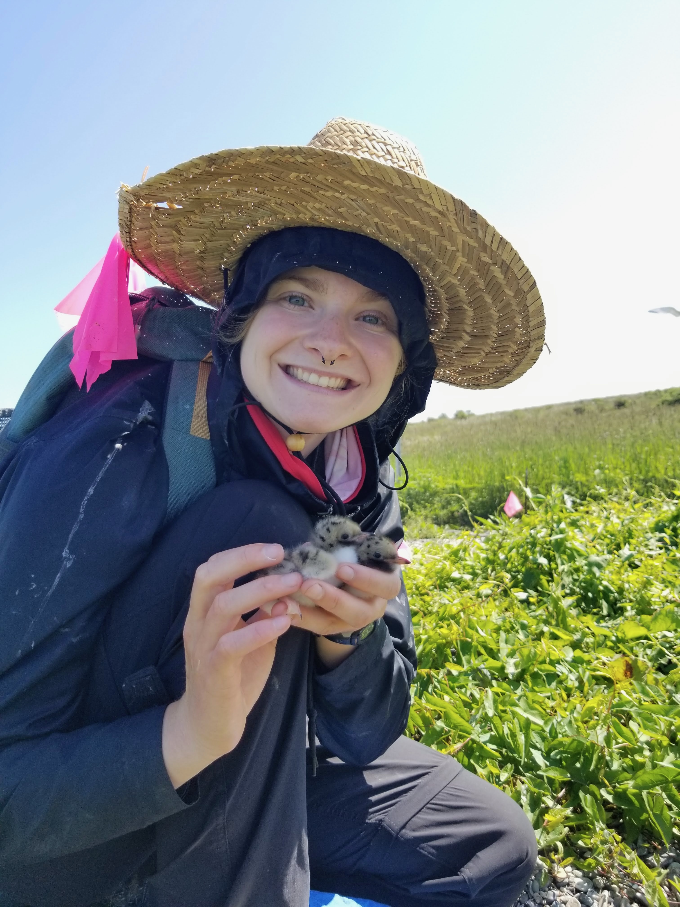
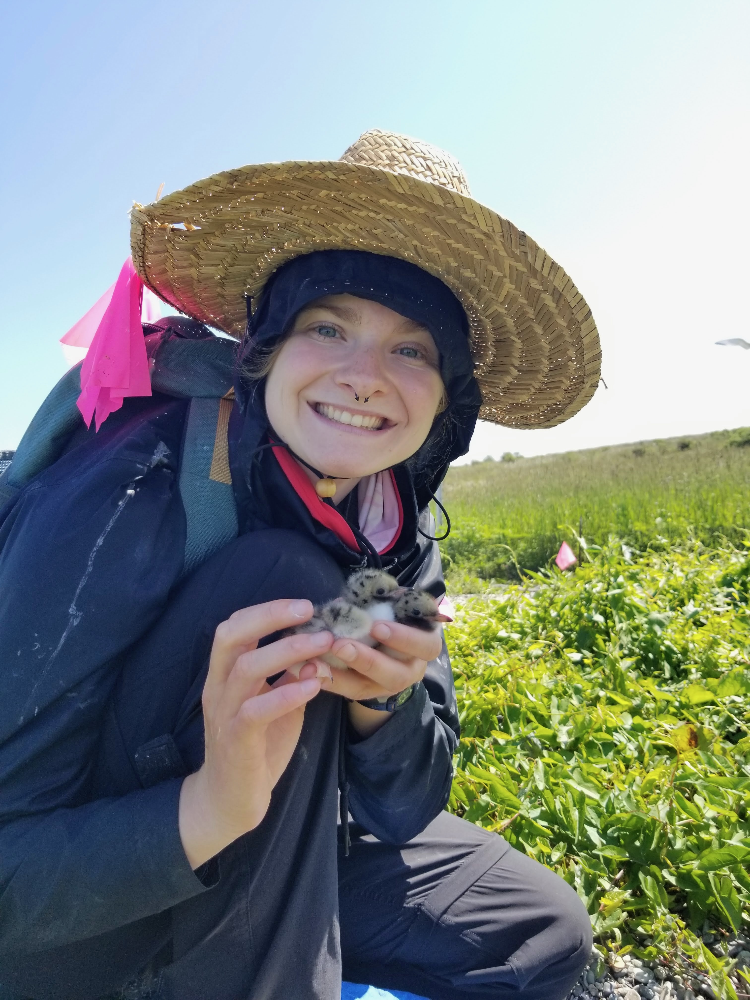
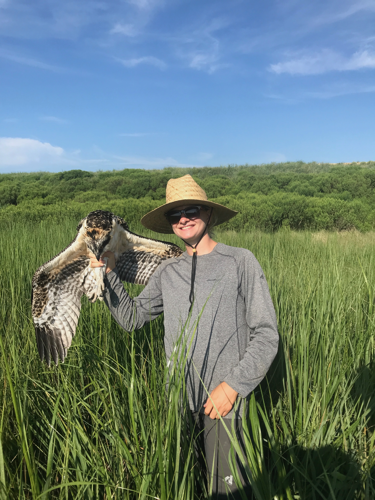
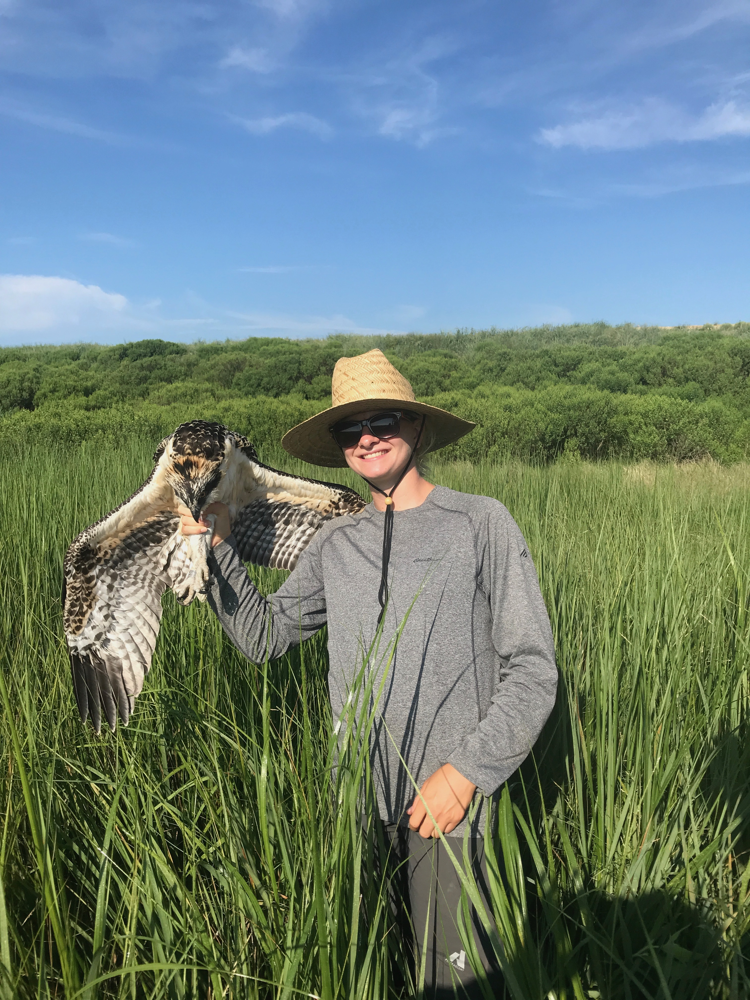

Hi, I'm Gwendolyn Zeckowski, and this is my portfolio for job applications.
I hope you find it useful as you review my qualifications. I appreciate your time and consideration. Enjoy exploring my work!
Click on the navigation bar above to find my Portfolio, Resume, LinkedIn, Github, and Email Contact!
 

 


I am a recent graduate with an M.S. in Geospatial Information Sciences from the University of Maryland. I also hold a B.S. in Environmental Science and Policy, with a concentration in Wildlife Ecology and Management and a minor in Geographic Information Sciences, also from the University of Maryland.
Since August 2024, I have been conducting surveys in riparian wetlands for the Maryland Department of Natural Resources. In this role, I used GIS to identify and contact landowners for the Maryland Biological Stream Survey on behalf of Clean Streams LLC. Additionally, I conducted stream surveys in Prince George's County, MD, focusing on geomorphology and contributing to the Maryland Biological Stream Survey in Prince George's County, Maryland.
The animals were handled in coordination with long-term population monitoring by the USGS and U.S. Fish and Wildlife Service. To ensure the safety and well-being of wildlife, please leave handling to permitted professionals.
Photos 1, 3, and 5 are from my most recent position with Clean Streams LLC, where I conducted stream field research. Photo 2 was taken during my internship with the U.S. Fish and Wildlife Service at the Maine Coastal National Wildlife Refuge. Photo 4 is from Poplar Island, taken while working with the USGS at the Patuxent Research Refuge.
Copyright © 2025 Gwendolyn Zeckowski